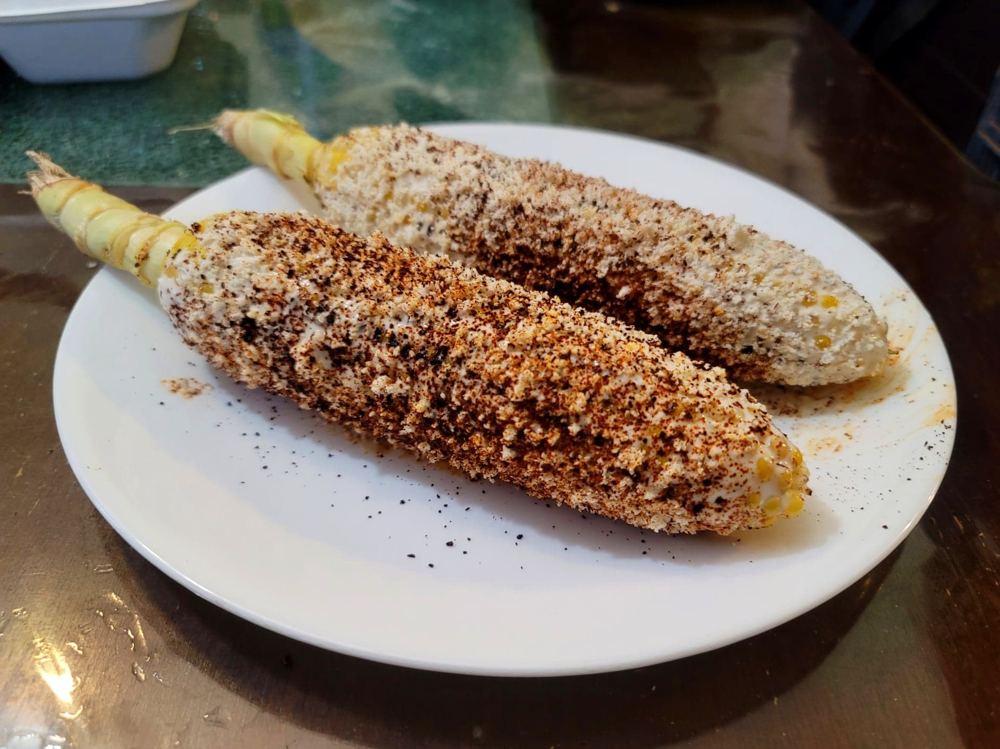

Elotes

Ingredients:
- Corn, husked, stalks left on
- Mexican crema fresca
- Cotija cheese
- Chipotle chili powder and/or Ancho chili powder
Instructions:
- Heat a grill to medium heat. Grill the corn until completely cooked on all sides, about 8 minutes overall.
- Brush the crema fresca all over the corn. Then coat with the cotija cheese. Lightly powder with chili powder and serve.